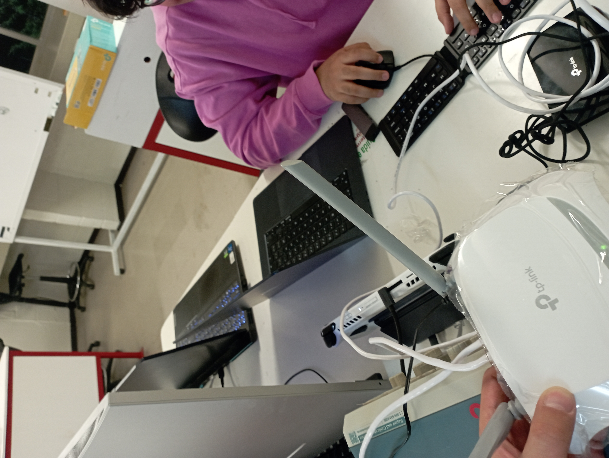

Portafolio de Actividades
Redes Digitales de Datos
Departamento de Ciencias e Ingenierías | Universidad Iberoamericana Puebla, México.


- Resumen -
Esta práctica tiene como objetivo entender, reconocer y validar el funcionamiento de una red de área local haciendo uso de switches y routers. Se deben crear dos configuraciones de red: una utilizando un switch y la otra un router, conectando al menos tres equipos y un servidor, aplicando asignación automática de direcciones IP y seleccionando el tipo de cable adecuado para cada caso. Después, se ejecutan pruebas de conectividad mediante comandos como PING y se comprueba el acceso a la página web alojada en el servidor. Al final, ambas redes deben integrarse y se debe verificar que los dispositivos pueden intercambiar archivos entre sí.
- Introducción -
Una red de área local (LAN, por sus siglas en inglés) es un conjunto de dispositivos interconectados dentro de un espacio físico limitado, como una oficina, un laboratorio, un edificio o una vivienda. Estas redes hacen posible el intercambio de información, el uso compartido de aplicaciones y recursos como impresoras, servidores o acceso a Internet de forma ágil, segura y eficiente. Debido a su alta velocidad de transferencia y bajo costo de instalación y mantenimiento, las redes LAN se han vuelto esenciales en contextos empresariales, educativos y domésticos.
El diseño y buen desempeño de una LAN depende del uso de dispositivos clave, principalmente switches y routers. Un switch es un dispositivo que funciona sobre la capa 2 del modelo OSI (enlace de datos) y se encarga de conectar equipos dentro de una misma red local. Utiliza direcciones MAC (Control de Acceso al Medio) para enviar datos de manera precisa al destinatario correcto, reduciendo colisiones y aumentando el rendimiento de la red. Gracias al uso de switches, es posible establecer comunicaciones simultáneas entre varios equipos, optimizando el flujo de datos.
Por otro lado, un router opera en la capa 3 del modelo OSI (capa de red) y su función principal es enlazar distintas redes entre sí, como una LAN con una red de área extensa (WAN), por ejemplo, Internet. Además de dirigir el tráfico entre redes, los routers suelen integrar funcionalidades como servidores DHCP (Protocolo de Configuración Dinámica de Host), cortafuegos y puntos de acceso Wi-Fi. El DHCP permite asignar IPs de manera automática a cada dispositivo, lo que facilita la gestión de la red, previene conflictos de direcciones y permite una expansión más sencilla.
Verificar correctamente la conectividad en una red LAN es crucial para asegurar su operatividad. Para ello, se emplean utilidades como el comando PING, que envía solicitudes ICMP al dispositivo destino y mide el tiempo de respuesta, ayudando a confirmar si existe comunicación, detectar posibles retrasos o pérdidas de paquetes y evaluar la estabilidad de la red.
- Materiales -
- 4 Laptops
- 5 Cables directos
- 1 Switch
- 1 Router
- Desarrollo -
Para llevar a cabo la instalación de la red, lo primero fue seleccionar los componentes necesarios: un switch, cuatro computadoras (tres actuando como estaciones de trabajo y una como servidor) y el cableado adecuado. Se optó por utilizar cable de par trenzado categoría 5e (Cat 5e), el cual es apto para transmisiones de hasta 1 Gbps en redes de área local.
Dado que los dispositivos conectados (computadoras y switch) son distintos entre sí, se emplearon cables directos (también conocidos como cables rectos), utilizando la norma T568A en ambos extremos. Posteriormente, cada equipo fue conectado a un puerto libre del switch mediante estos cables, asegurándose de que todos estuvieran encendidos y funcionando correctamente. El servidor fue conectado de la misma forma.
Para configurar la red, se activó la asignación automática de direcciones IP utilizando el protocolo DHCP. En este caso, se usó el servidor como emisor de las direcciones IP o, alternativamente, se conectó temporalmente un router con DHCP habilitado para realizar esa tarea.
Una vez completadas las conexiones físicas y la configuración inicial, se comprobó que cada equipo obtuviera una dirección IP válida dentro del mismo segmento de red. Para confirmar la comunicación entre los dispositivos, se empleó el comando PING desde cada computadora hacia las demás, verificando que los paquetes llegaran correctamente y no hubiera pérdida de datos, lo que indicó que todos los equipos estaban conectados y comunicándose adecuadamente.

- Resultados -
Para probar la conexión entre dispositivos, realizamos una interfaz con HTML y CSS para mandar desde la computadora servidor hacia las otras computadoras para comprobar la funcionalidad.

Las 3 computadoras viendo la interfaz que mandó la computadora servidor
- Conclusiones -
En esta práctica, se logró comprender y aplicar los conceptos fundamentales de redes de área local mediante la implementación de configuraciones con switches y routers. La experiencia permitió reforzar habilidades en la selección de materiales, el diseño de topologías de red y la configuración de dispositivos. Además, se verificó la conectividad y funcionalidad de la red mediante pruebas prácticas, como el uso del comando PING y la visualización de una interfaz web alojada en el servidor. Este ejercicio destacó la importancia de una planificación adecuada y el uso de herramientas de diagnóstico para garantizar el correcto funcionamiento de una red, sentando las bases para proyectos más complejos en el ámbito de las telecomunicaciones y redes de datos.
- Referencias -
Small business IT explained in 60 seconds or less: Switches vs. Routers. (2023, 3 mayo). [Vídeo]. Cisco.
CoveriX. (2024, 19 junio). Ventajas y desventajas de los servidores locales. Coverix.